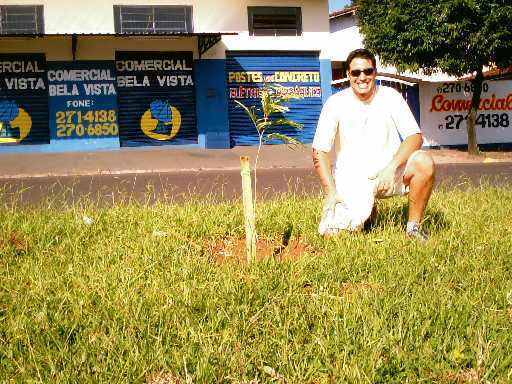
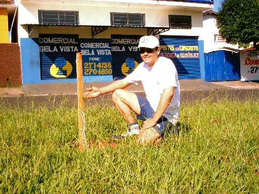
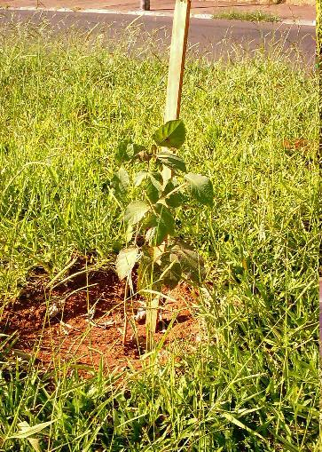
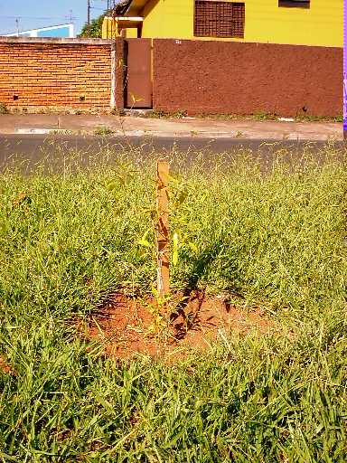
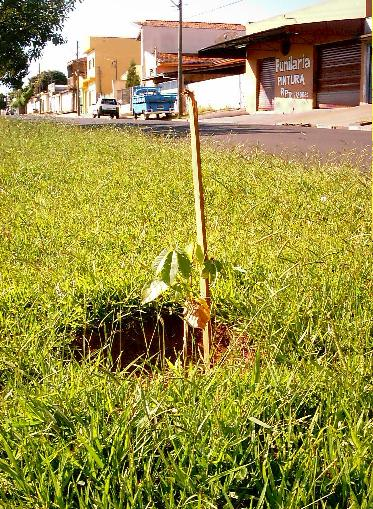

Neste dia,
plantamos mais 5 mudas no Quarteirão G
da Avenida Henrique Gregori:
Este plantio
foi necessário após um ato de vandalismo de um dos moradores,
que arrancou 3 das 6 mudas que
havíamos plantado no dia 26/01/2003.
O morador foi notificado e não
tocou em mais nenhuma das árvores.
Veja as fotos
do plantio:
 |
Na
descontração, Danilo posa ao lado da primeira árvore plantada. |
 |
Alexandre
mostra a segunda árvore plantada, um Ipê Branco. |
 |
As chuvas
fizeram o mato crescer rápido,
mas a árvore fica em destaque.
|
 |
A quarta
muda plantada.
O local vazio dará lugar à beleza das árvores. |
 |
Por fim, a
quinta muda é plantada.
Esperamos que nosso colaborador
cuide bem delas ! |
É importante manter a
vigilância das árvores que plantamos, pois
podemos nos surpreender com a
atitude de alguns moradores ignorantes.
Agora, com tudo devidamente no
lugar, esperamos encontrar
poucas "pedras" como
esta, em nosso projeto.
O interessante é que um ato
destes, ao invés de nos desanimar,
somente nos incentiva a plantar
mais árvores e a prosseguir com nosso projeto.
|